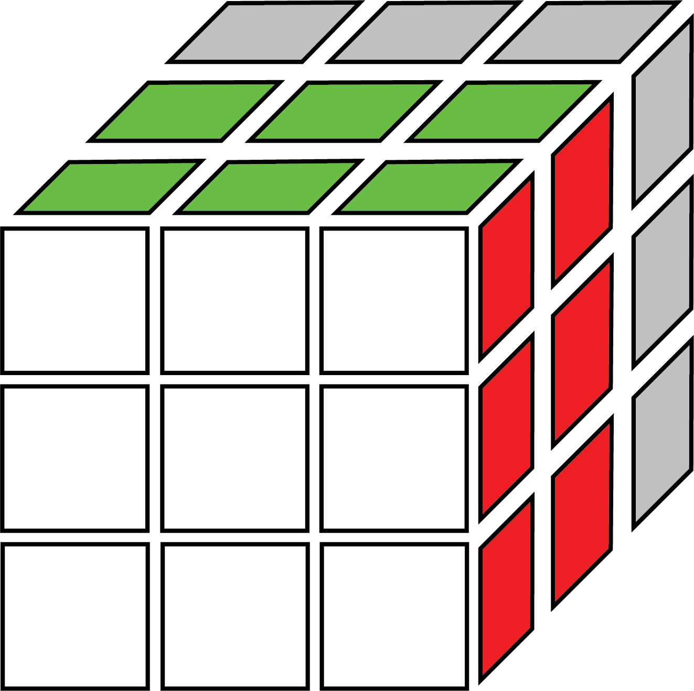
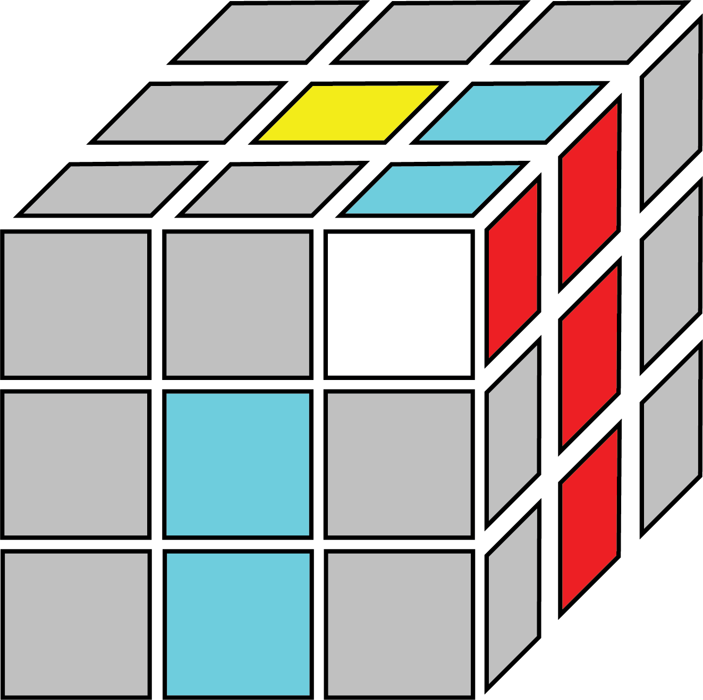
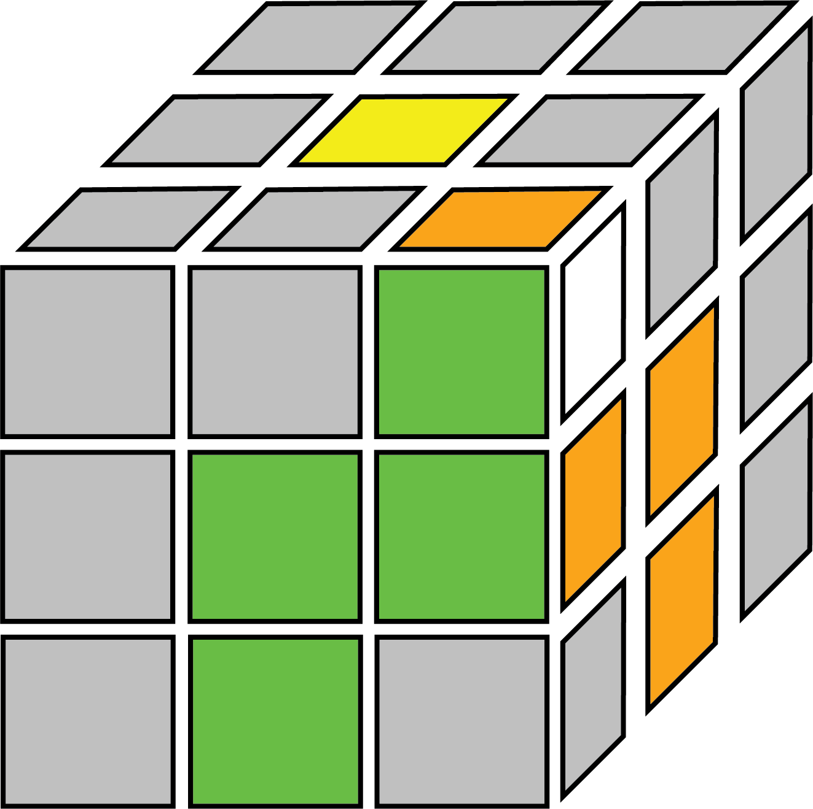
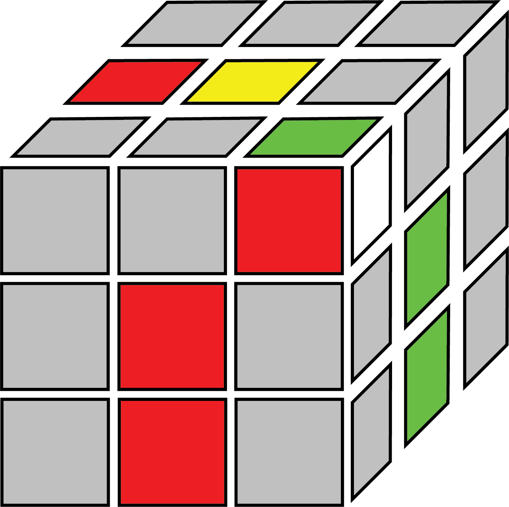
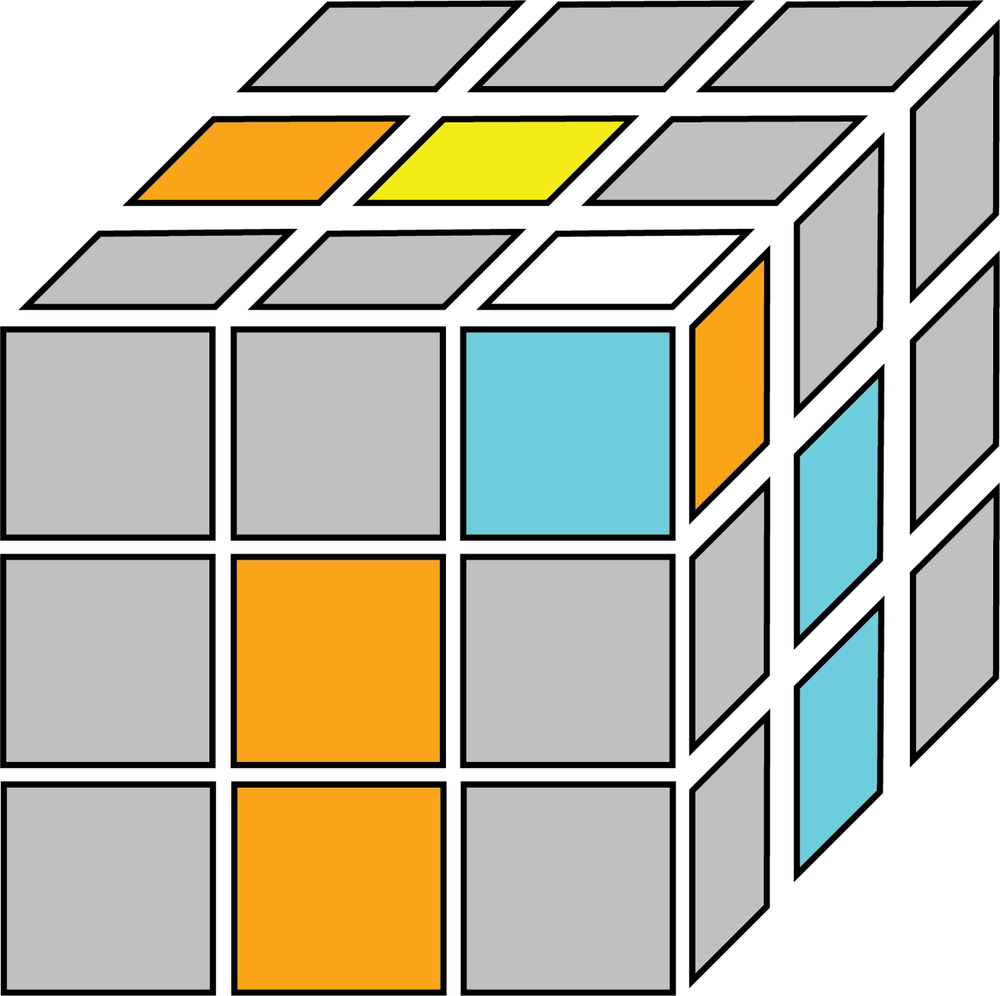
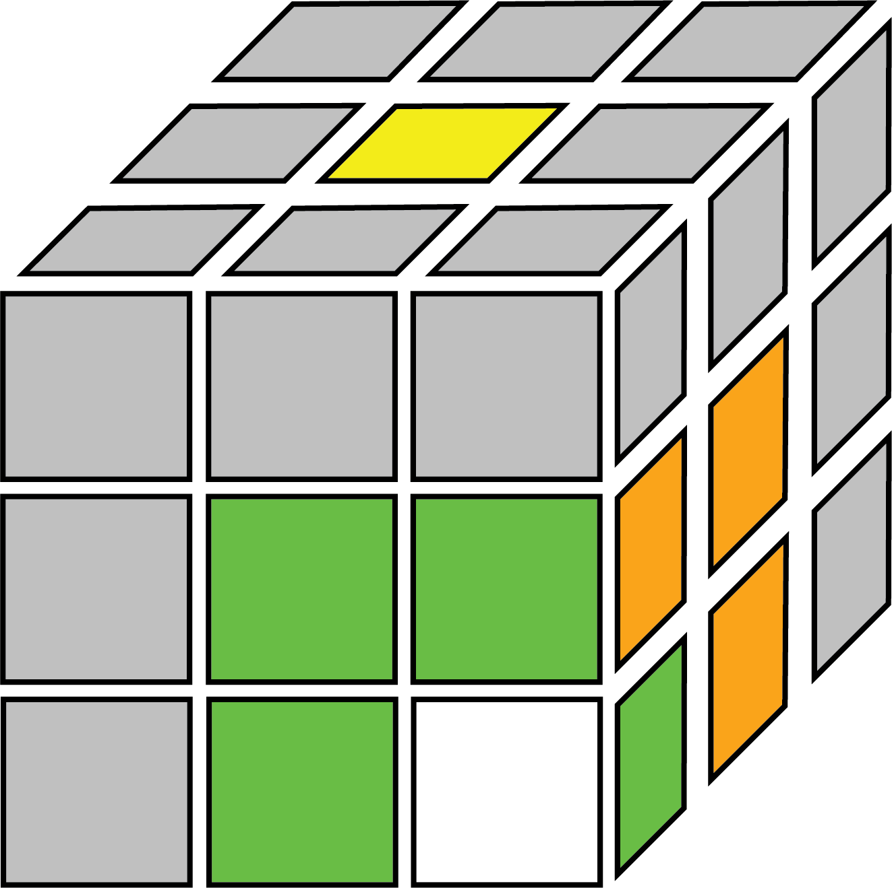

CFOP Method-Step 2: First Two Layers (F2L)

This step is where the difficulty of memorizing the CFOP method starts to come in, as there are 41 different cases in this step to memorize (42 if you count a pre-solved pair).
42 algorithms sound like a lot, as it is more than double the amount of algorithms than in the beginner's method. However, as this step is fairly intuitive, you can first start learning F2L by watching a guide on intuitive F2L, which only uses 4 algorithms, at the cost of being slower for complex cases.
The first two layers (F2L) step, as the name implies, involves solving the first and second layer simultaneously, by solving the first layer corners and edges as pairs. The 41 possible cases in this step can be solved intuitively but it's more useful to to be able to memorize the cases instead. While practicing this step, refer to this page or have a table of algorithms printed on your desk for guidance. I would recommend learning this step last if you already know intuitive F2L.
Solving the F2L intuitively is much more difficult to teach or learn from an online text guide, so I recommend you watch a Youtube tutorial on this step if you want to learn more about intuitive F2L. Intuitive F2L is also slower to execute in solves, and for that reason this page will only be covering the non-intuitive F2L algorithms.
After mastering the CFOP method (sub-15 second solves), you can try learning VLS (Valk Last Slot), or at least the winter variation, where you can solve OLL while inserting the last F2L pair. However, this is beyond the scope of this guide. (I really don't want to make more graphics after this.)
Explaination of F2L:
In order to get to the position of one of the cases, you must first locate one of the four corner-edge pairs to solve. For ease of explaination, assume you are solving the white side F2L. Corner-edge pairs are white corner pieces, and the edge piece with the same two colours. For example, White-Green-Red corner with Green-Red edge, White-Blue-Red corner with Blue-Red edge, etc. The following 4 images depict all the corner-edge pairs to solve when starting from white cross:
Obviously, in a actual solve, the pairs will not be already made for you, and you need to use the algorithms to pair them up and insert the pair into the appropriate places. The last image shows the relative positions that the edge (red) and corner (orange) pieces need to be in order to use the algorithms. Sometimes, the pieces will already be in the position, but you may also need to move the pieces to the top layer to use the algorithms. Knowing how to get to each of the cases will take expirence and it would likely be easier if you watch videos walking through basic F2L.
Cases:
Now that you have the pieces in the right position, you will need to select and execute the moves to solve the specific F2L case that you have. The algorithms here are not the only ones that can be used, however, they should be fine for the purpose of right-handed solvers learning F2L for the first time. Brackets signify that moves should be done together in quick succession.
- Easy cases
- Corner in bottom spot, edge in top layer
- Corner in top spot, edge in middle layer
- Corner pointing out, edge in top layer
- Corner pointing up, edge in top layer
- Corner in bottom spot, edge in middle layer
These can be solved in 3 and 4 moves, intuitive solvers will usually try to move the pieces into one of these positions in order to solve it:
(F' U' F) | |
(R U R') |
(U' F' U F) | |
|  | (U R U' R') |
Note the first two cases are simliar to the beginner's method:
(U R U' R') (U' F' U F) | |
(U' F' U F) (U R U' R') | |
(F' U F) (U' F' U F) |
(R U R') (U' R U R') | |
(R U' R') (U R U' R') | |
(F' U' F) (U F' U' F) |
(R U R' U') (R U R' U') (R U R') | |
(R U' R') (d R' U R) | |
|  | (U F' U F) (U F' U2 F) |
(U F' U' F) (d' F U F') | |
(U' R U' R') (U' R U2 R') | |
(U' R U R') (d R' U' R) |
(R U' R' U) (d R' U' R) | |
(F' U F U') (d' F U F') | |
(U F' U2 F) (U F' U2 F) | |
(U' R U2 R') (U' R U2 R') |
(U F' U' F) (U F' U2 F) | |
 | (U' R U R') (U' R U2 R') |
(U' R U' R' U) (R U R') | |
(U F' U F U') (F' U' F) |
|  | (U' R U R' U) (R U R') |
(U F' U' F U') (F' U' F) | |
(U F' U2 F U') (R U R') | |
(F' U' F) (U F' U' F) |
(R U R' U') U' (R U R' U') (R U R') | |
y' (R' U' R U) U (R' U' R U) (R' U' R) | |
|  | (U2 R U R') (U R U' R') |
(U2 F' U' F) (U' F' U F) |
(U R U2 R') (U R U' R') | |
(U' F' U2 F) (U' F' U F) | |
(R U2 R') (U' R U R') | |
(F' U2 F) (U F' U' F) |
(R U' R' d R' U2 R) (U R' U2 R) | |
(R U' R' U R U2 R') (U R U' R') | |
|  | (R U' R' U' R U R') (U' R U2 R') |
(R U R' U' R U' R') (U d R' U' R) | |
(R U' R' d R' U' R) (U' R' U' R) |